HISTORIA
El Sevilla Fútbol Club fue fundado el 25 de enero de 1890, siendo el club decano de la ciudad de Sevilla y el segundo más antiguo de España. Su primer presidente fue el vicecónsul británico Edward Farquharson Johnston.
A lo largo de más de un siglo de historia, la entidad de Nervión ha forjado una identidad única basada en la casta y el coraje, convirtiéndose en el club más laureado de Andalucía y un referente en el fútbol europeo.
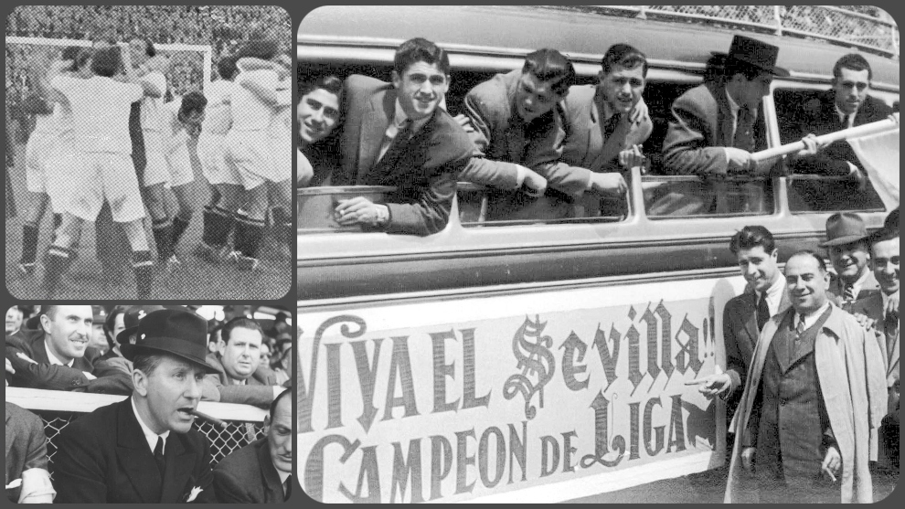
+ 80 Temporadas
En Primera División, consolidado en el top 6 de la clasificación histórica de LaLiga.
2005
El Himno del Centenario, convertido en uno de los símbolos más icónicos del fútbol mundial.
2006 y 2007
Elegido Mejor Club del Mundo por la IFFHS durante dos años consecutivos, un hito histórico.
TÍTULOS
x7
UEFA Europa League
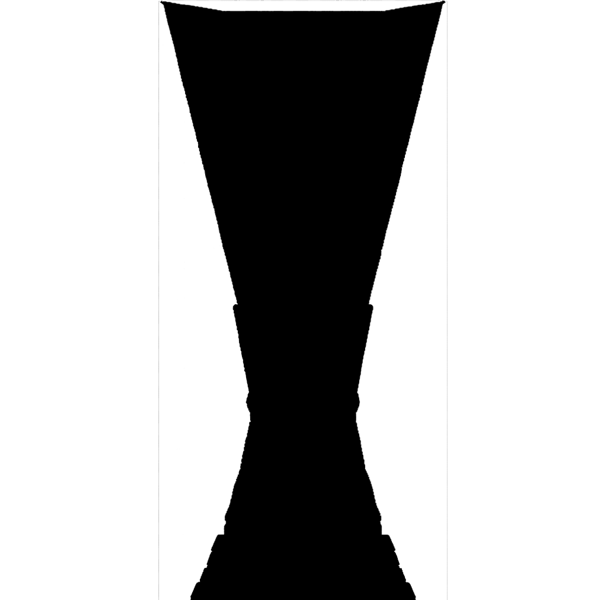
x1
Supercopa de Europa
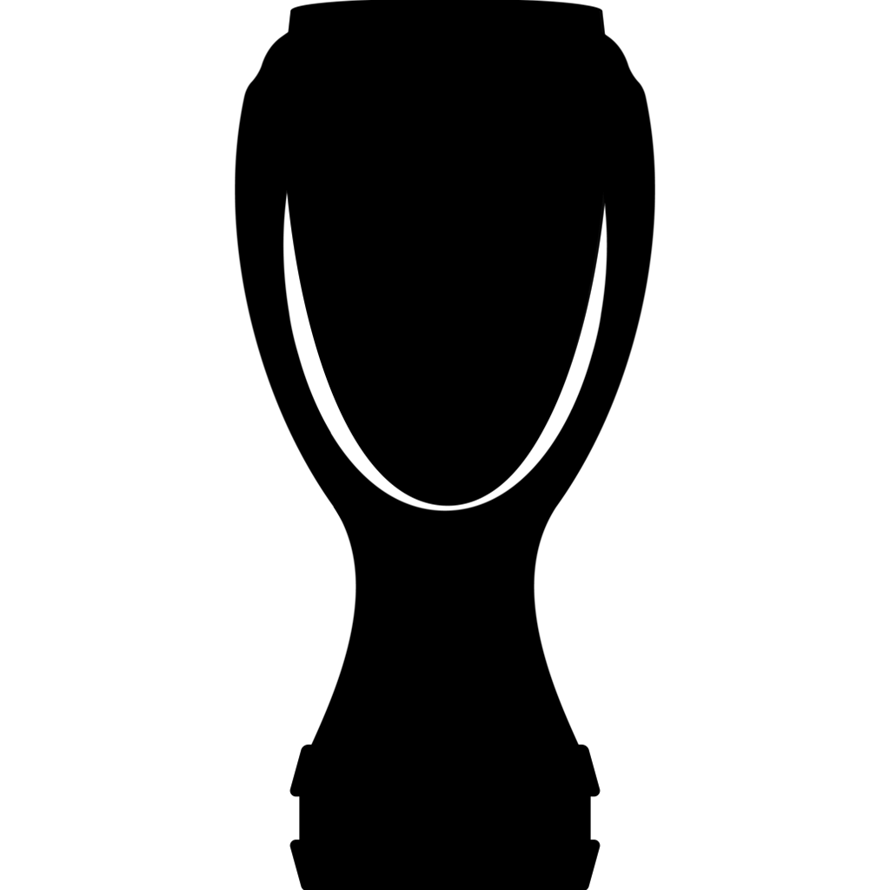
x1
Liga
x5
Copa del Rey
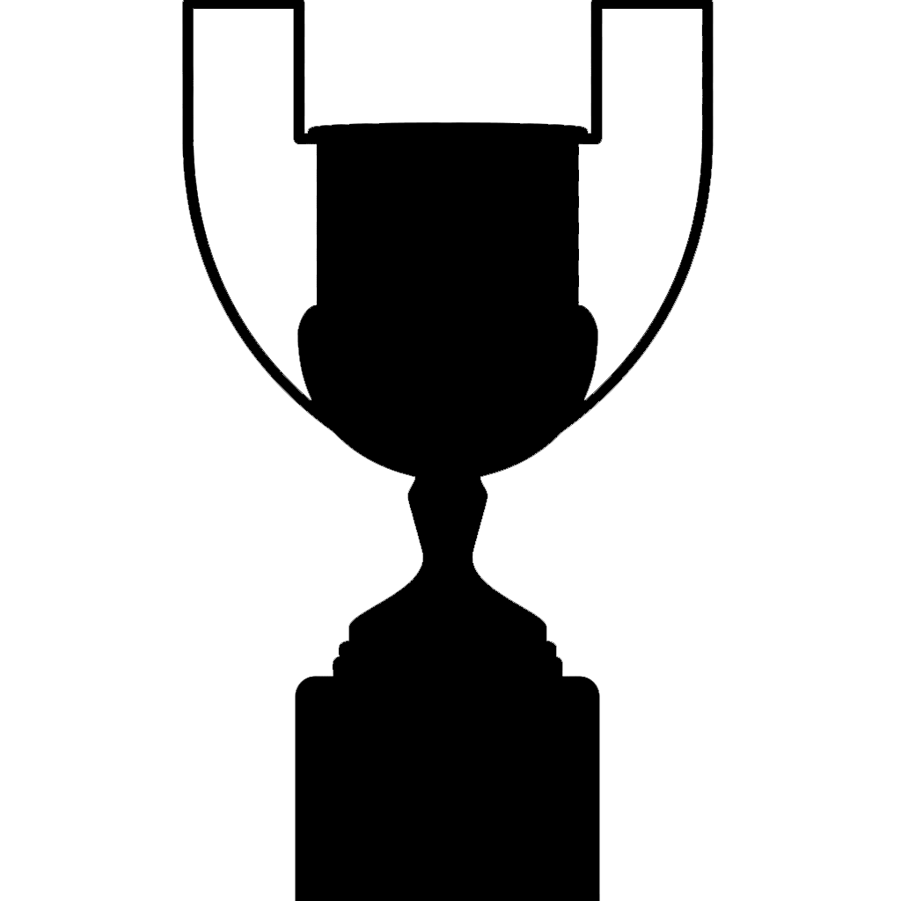
x1
Supercopa de España
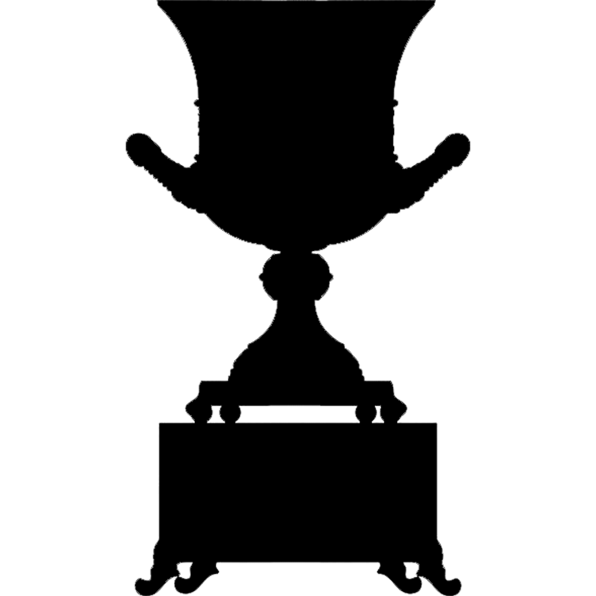
ESTADIO
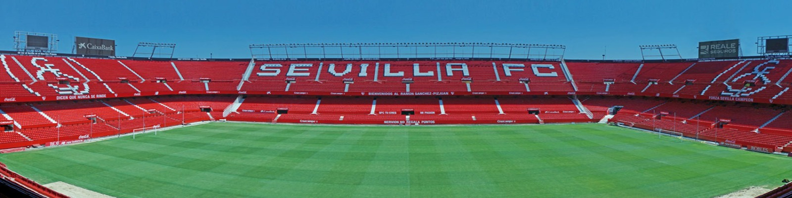
El Estadio Ramón Sánchez-Pizjuán, conocido como el templo de Nervión, fue inaugurado el 7 de septiembre de 1958 y debe su nombre al histórico presidente que impulsó su construcción y adquirió los terrenos. Con capacidad para más de 43.000 espectadores, es el epicentro de la pasión sevillista y uno de los estadios más reconocidos y respetados del fútbol europeo.
En su fachada de Preferencia luce el icónico mosaico de Santiago del Campo, creado para el Mundial de 1982, símbolo de la identidad de Nervión. Escenario de noches mágicas de Europa League donde la afición canta a capela el Himno del Centenario, el Sánchez-Pizjuán es un fortín legendario donde además la Selección Española se mantiene históricamente invicta.